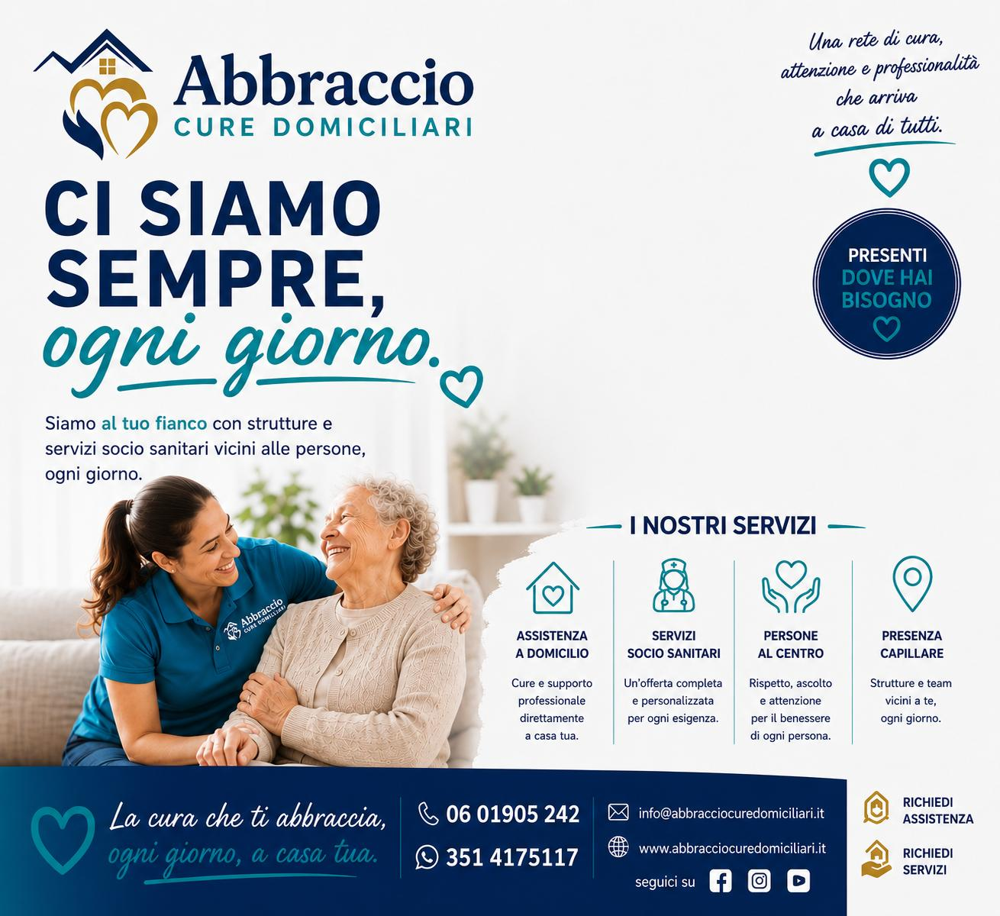
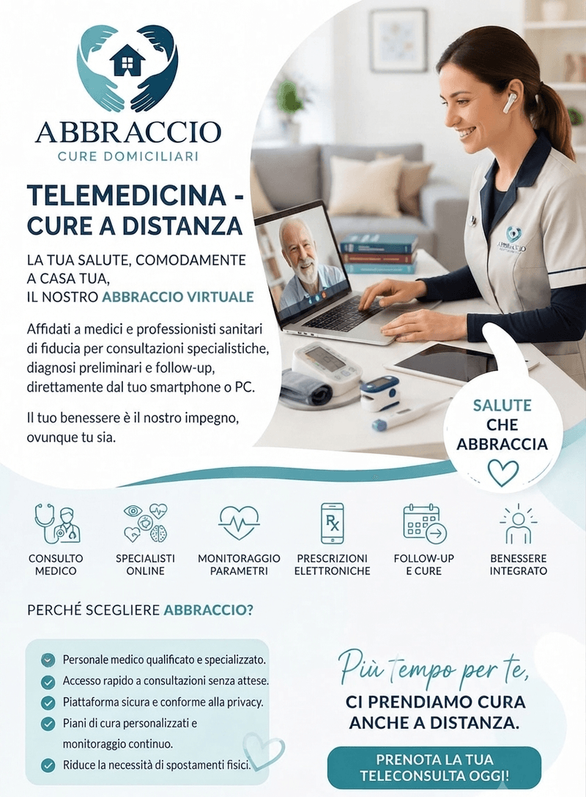
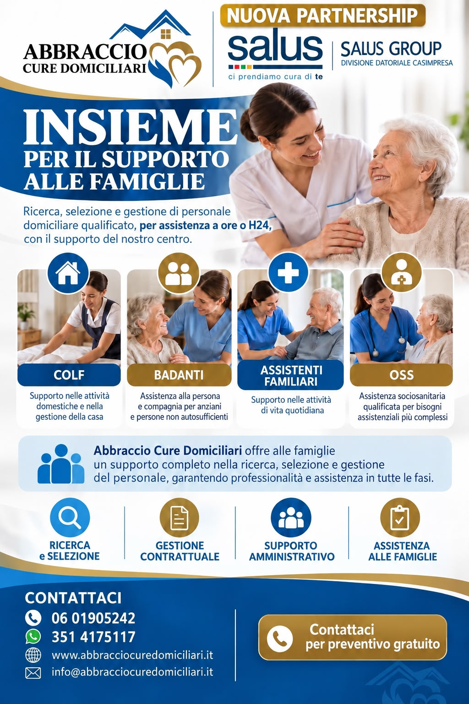
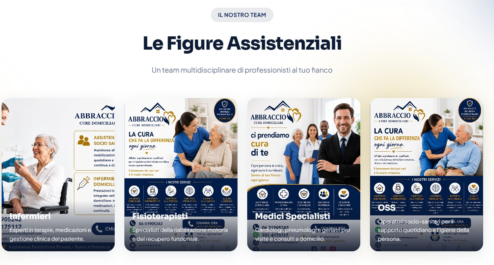

Salute e prevenzione
Rientro al lavoro e assistenza genitori anziani
Permessi e soluzioni per conciliare lavoro e assistenza.
Hai bisogno di assistenza sanitaria, fisioterapia, OSS o esami a domicilio? Ti aiutiamo a Roma e provincia, senza farti perdere tempo.

Due strumenti gratuiti per sapere quanto costa il servizio prima ancora di chiamarci
Soluzioni sanitarie integrate: assistenza, riabilitazione, diagnostica e trasporto
Diagnostica completa direttamente a casa tua, con referti digitali
La tua salute, comodamente a casa tua: il nostro ambulatorio virtuale. Affidati a medici e professionisti sanitari per consulenze specialistiche, diagnosi preliminari e follow-up direttamente dal tuo smartphone o PC.

Con Salus Group — Divisione Datoriale Casimpresa offriamo ricerca, selezione e gestione di personale domiciliare qualificato, per assistenza a ore o H24, con il supporto del nostro centro in tutte le fasi.

Scopri una vasta selezione di ausili, accessori e prodotti specializzati per anziani, malati e disabili. Accedi al nostro nuovo shop online e trova le soluzioni migliori per le tue esigenze.
Visita shopI nostri centri sono reperibili 24 ore su 24, anche sabato, domenica e nei giorni di festa.
Anche in caso di imprevisti o emergenze, i nostri servizi vengono attivati nel minor tempo possibile.
Con una rete capillare di professionisti attiviamo servizi in tutta Roma e in tutta la provincia.
Quattro passaggi per avere il professionista giusto a casa tua
Descrivi di cosa hai bisogno: un infermiere, una badante, un esame a domicilio o una visita specialistica.
Ti proponiamo il professionista adatto con un preventivo chiaro, senza sorprese.
Organizziamo giorni e orari secondo le tue esigenze, a Roma e provincia.
Ogni giorno le persone che ci accordano fiducia ci raccontano come i nostri servizi le hanno aiutate
Un unico pulsante: la recensione viene salvata sul sito e ti viene proposta anche la pubblicazione su Google.
Registrati come operatore sul nostro gestionale: ti ricontattiamo per attivarti nella tua zona.
Registrati come operatore Registrati come badante, colf o assistente familiareBadanti, colf e assistenti familiari: entra nella nostra rete in tutta Italia.

Immagini reali del nostro lavoro quotidiano a Roma e Provincia
Permessi e soluzioni per conciliare lavoro e assistenza.
L'importanza dell'assistenza a casa per una ripresa sicura.
Consigli per affrontare l'estate in sicurezza.